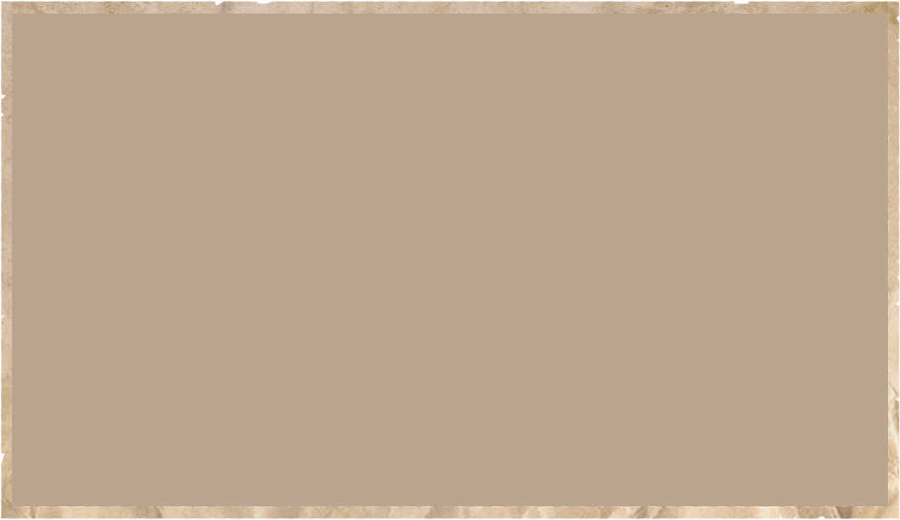
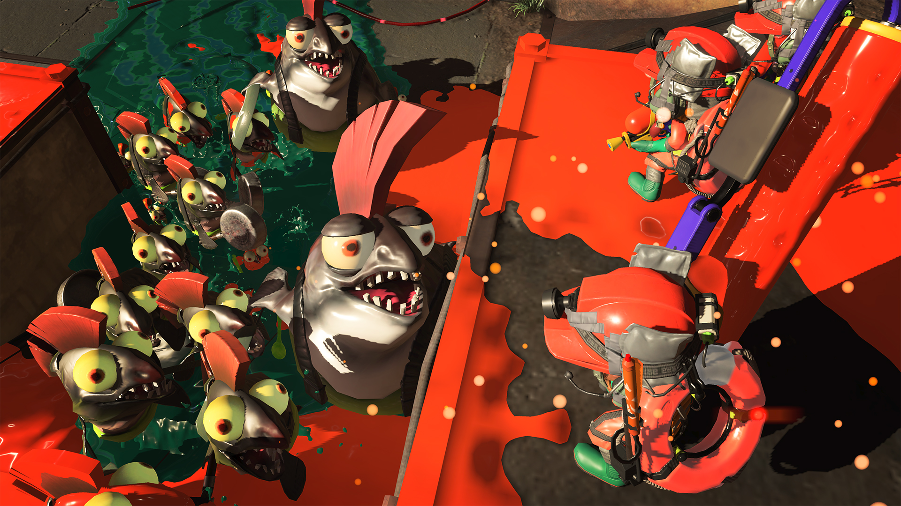
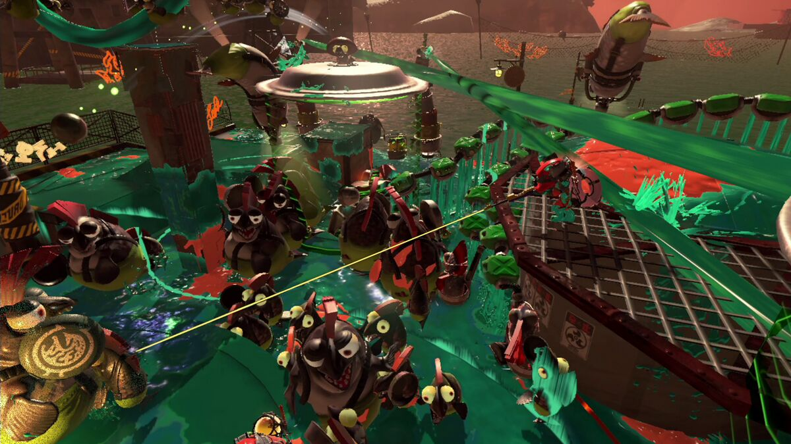
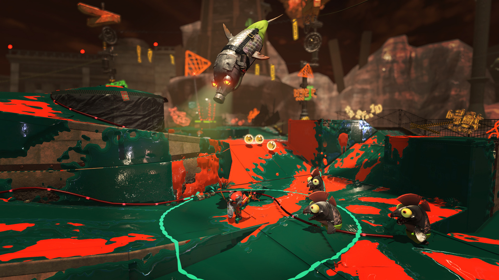
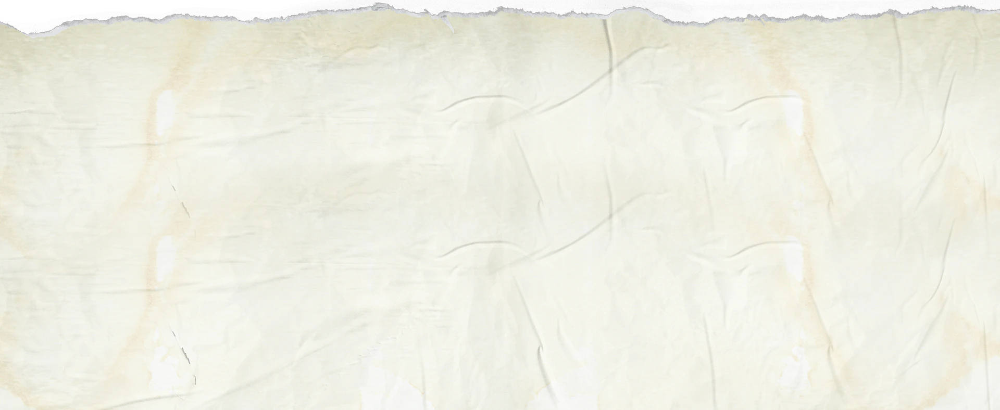
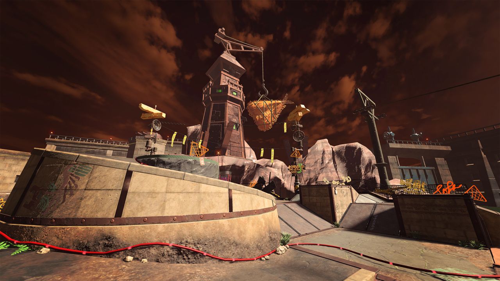
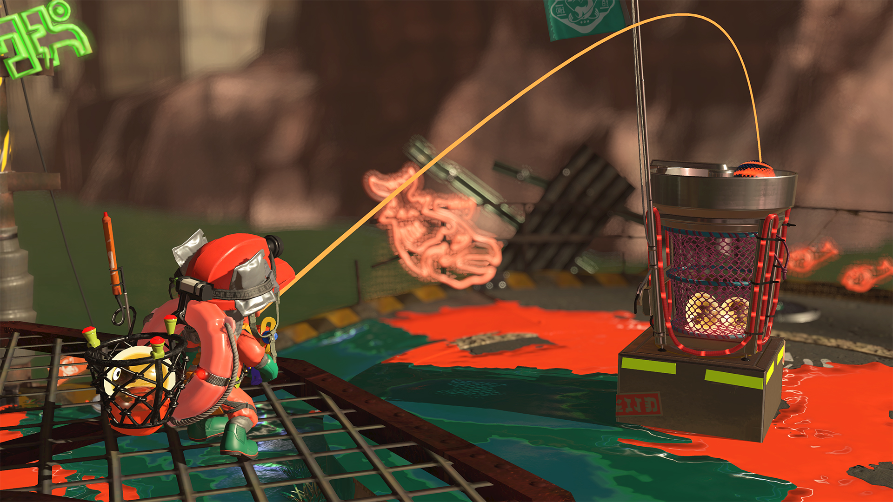
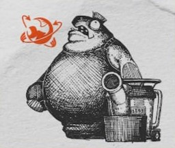

2.2.11 Artilleroides

-
Información básica
- Colocan cañones o "lanzadores" junto a la orilla para lanzar balas que acarrean desde el mar.
- No son de carácter agresivo; solo van y vuelven del mar para traer las balas a los lanzadores.
- También es posible usar los lanzadores para cargar y disparar huevecillos dorados.
-
Patrón de ataque
- Dispara balas en dirección a la nasa pesquera.
- Las balas crean dos ondas de choque, una en cada punto de impacto.
-
Cómo reventarlos
- Elimina al salmónido que opera el lanzador.
-
Información complementaria
- Entre los salmónidos corpulentos, los más beligerantes suelen convertirse en ferroces, mientras que a los más tranquilos se les asigna el puesto de artilleroides.
- Durante las festividades salmónidas, los artilleroides lanzan fuegos artificiales en lugar de balas de cañón para contribuir al ambiente de júbilo.